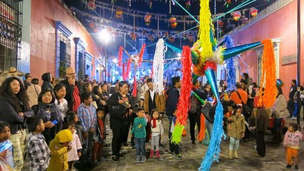
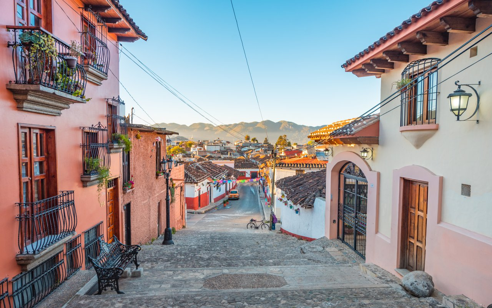

Permiso de uso de cookies para:
Mexico
Mexico Lindo y Querido
Sobre Nosotros

La palabra autentico toma sentido.
Mision
Somos una empresa familiar tradicional que brinda siempre el mejor servicio, contamos con una opcion de hospedaje sostenible, que encaja a la perfeccion on el entorno para brindarle la oportunidad dde sentirse en su hogar gracias basados en el trato a nuestros clientes y el cuidado en los detalles
Vision
Empresa lider en el mercado de Sientete en Casa, mediante la innovacion constante de servicios, asi como el desarrollo de nuestro recurso humano para poder cumplir con las espectativas de nuestros clientes
Valores
Nos representan valores tales como exigencias diarias tales como el Orden, la Limpieza, Puntualidad, Responsabilidad, Honradez, y Amor al trabajo, formando así una empresa de calidad dispuestos a servirle a usted, nuestro cliente
Nuestros Servicios
Dentro de la gama de servicios que ofrecemos destancan
Ahora que ya sabes lo que hacemos, Viajemos juntos
Destinos a Visitar
Muchas Cosas por Descubrir
Comienza una Nueva Aventura

Dia de Difuntos

Erigir altares en memoria de los difuntos
Que es la « fiesta de los muertos » ? Para hacerlo simple, es como si los muertos regresan para festejar con su familia!
Las familias instalan altares en el suelo o en mesas en privado o en publico (en las calles, en las tiendas, en salones comunales…), en memoria de la persona difunta.
El altar esta cubierto de un mantel colorido muy decorado con pedazos de papel de colorido, representando calaveras o esqueletos.
Generalmente se coloca la foto de la persona fallecida, cosas que le pertenecieron, velas encendidas, incienso y agua bendita…
Sin olvidar las flores (flores blancas para los bebes que no fueron bautizados antes de fallecer).
Todo es muy detallado y minucioso porque en la creencia popular, un muerto puede traer la propesridad (or ejemplo una buena recolta de maiz) o la desdicha (enfermedades, accidentes, dificultades financieras
etc.) todo depende de como el ritual se lleva a cabo, detalla la Unesco, quienes inscribieron la fiesta de los difuntos en 2008 en la lista de patrimonio cultural immaterial de la humanidad.
Un Banquete para los muertos
Es sobrre todo la comida la que ocupa un gran lugar en las fiestas. Los mexicanos preparan los platos favoritos de los difuntos: tamales, moles (salsas con pimientos, chocolate, cebolla, maní y varios ingredientes que acompañan a los platos de carne), frijoles negros, chocolate caliente, café picante, fruta… y una botellita de mezcal o tequila ! En los días previos a las festividades, panaderos y pasteleros preparan “calaveras” (calaveras de azúcar o chocolate), “pain des muerto” (pan brioche espolvoreado con azúcar) o incluso calabazas confitadas en azúcar moreno de caña. Según la creencia, los muertos saborearán la esencia de estos platos ... pero son los vivos quienes los comerán al final de las festividades!
Un picnic en el cementerio.
El 2 de noviembre, las familias van al cementerio, haciendo un camino con pétalos de flores y encendiendo velas para guiar las almas hasta las tumbas. En esta ocasión, limpian las tumbas, las llenan con flores, colocan allí ofrendas, antes de transformar el cementerio en un merendero: comemos, bailamos, cantamos, tocamos la música que amaba al difunto !
Los orígenes aztecas e hispanos del Día de Muertos
Este ritual no es nuevo: los aztecas ya visitaban regularmente las tumbas de los difuntos para dejar ofrendas. También celebraron a los muertos en dos fiestas: Miccaihuitontli para niños y, veinte días luego, Hueymiccalhuitl para adultos
.Pero el legado más flagrante que dejaron es sin duda la omnipresencia de cráneos y esqueletos: “En el pensamiento prehispánico la muerte no era un final sino una etapa del ciclo muerte / renacimiento”, resaltó. Nathalie Ragot, profesora de la Universidad Paris Diderot, en un artículo sobre Muerte en México1.“El arte precolombino abunda en representaciones de calaveras, tibias cruzadas, deidades total o parcialmente carnosas. Estos patrones ilustraciones iconográficas ilustran el poder de la regeneración y el poder fertilizante de la muerte”. Durante la conquista española prevaleció la fe católica, trayendo nuevos rituales a las ceremonias, como erigir altares con vino y pan para apaciguar las almas. También tenía elementos, como los bailes macabros donde la muerte golpeaba sin distinción social, que fueron asimilados por los indígenas.
Nacimiento de Calaveras y Catrinas
Esta imaginería fue retomada a finales del siglo XIX por dos famosos dibujantes, Manuel Manilla y José Guadalupe Posada, quienes inventaron las calaveras: estas son esas calaveras humorísticas que se parecen extrañamente a humanos. Esbozaron así toda la sociedad mexicana en forma de esqueleto: los religiosos, los militares, la burguesía, los indígenas ... El personaje de Catrina, el esqueleto de una dama de la alta sociedad, vestida con ropas lujosas y usualmente con sombrero, rápidamente se convirtió en emblemático del Día de Muertos. Esta colorida figura de papel maché fue creada en 1912 por el artista mexicano José Guadalupe Posada. Se ha convertido durante el siglo XX en uno de los símbolos del Día de Muertos e incluso en un ícono de la cultura mexicana. A los Mexicanos les gusta disfrazarse e interpretar a este personaje simbólico en la fiesta de los muertos. Deseando representar la muerte a la alta sociedad, el dibujante optó por pintar el busto del esqueleto de una anciana, elegantemente vestida y con un sombrero adornado con plumas de avestruz. El esqueleto lleva en la base el nombre de "Calavera Garbancera". No fue hasta el cuadro de Diego Rivera "Sueño de una tarde de domingo en el parque Alameda" que se llamó "Catrina"..

San Miguel de Allende
San Miguel de Allende es una ciudad en el estado mexicano de Guanajuato.
Forma parte de la macrorregión del Bajío.
Es la cabecera del municipio del mismo nombre y uno de los principales destinos turísticos de México.
La ciudad se encuentra a 1910 m sobre el nivel del mar, a 274 km de la Ciudad de México, a 97 km de Guanajuato, a 157 km de León y a 70 km de Santiago de Querétaro.
San Miguel de Allende tiene un clima fresco que puede variar de
14ºC a 20ºC en los dias mas caliente.
San Miguel a été déclarée ville magique, et ce titre a été retiré en 2008 parce que, le 7 juillet 2008, l’UNESCO l’a inscrite au patrimoine culturel de l’Humanité, sous le titre de Villa Protectora de San Miguel y Sanctuario de Jesus Nazareno de Atotonilco, en raison de son apport culturel et architectural au baroque mexicain et de son importance dans la lutte en faveur de l’indépendance.
Posadas
Literalmente, este término significa "albergue", en español (¡sin juego de palabras aquí!).
Originalmente, las posadas se llevaban a cabo del 16 al 24 de diciembre. Estas son las 9 noches durante las cuales María y José viajan de
Nazaret a
vayan a Belén, como peregrinos. En cada ciudad de escala, fueron alojados y alimentados por quien quisiera ...
¡En la noche del 24, todo el mundo sabe lo que pasó!
Las posadas y sobre todo la tradición que gira en torno a ella, es católica, es muy importante a los ojos de los mexicanos.
Tanto es así que algunos todavía practican estas visitas, en la vida cotidiana, a sus vecinos, por un
tiempo, semana o más. Es una gran oportunidad para "divertirse". Planee llenar una hielera, por si acaso ... ¡es normal en este país!
El período de las posadas termina con la destrucción de las piñatas por parte de los niños.
Los adultos suelen colgarlas en medio de un espacio vacío y los niños, en Nochebuena, la golpean hasta que se rompe dejando caer los dulces
Que sont les piñatas ?
La piñata tradicional se compone de una parte central, que, concretamente, es un pequeño jarrón redondo, que representa la tierra y toda su riqueza natural. Alrededor, los 7 alfileres que salen de ella, simbolizan las malas acciones
hombres en este planeta, a saber, los 7 pecados capitales. Los alfileres están coloreados para seducir, divertir, cebar, como todo lo que persuade al Hombre a pecar. Sólo los seres humanos imbuidos de virtudes podrán poner fin a
estas dolencias. Es el palo, llevado por un niño, con todas sus virtudes, el que lo vence.
La piñata así rota, deja escapar del Mundo, las "buenas obras" (representadas por dulces: ¡lógico!)
Chiapas
La increíble ciudad de Palenque
Es una ciudad maya ubicada en el estado mexicano de Chiapas, cerca del río Usumacinta. Es uno de los sitios más impresionantes de esta cultura.Comparado con otras ciudades mayas, es de tamaño mediano: mucho menor que Tikal o Copán, sin embargo, destaca por su patrimonio arquitectónico y escultórico. Apoyado en una espesa selva, al pie de las montañas de Chiapas, frente a la llanura de Tabasco que se despliega a sus pies en una suave pendiente, Palenque ("rodeada de árboles") es una de las ciudades mayas más grandes de México.
San Cristobal de las Casas
Ubicada en el corazón de Chiapas, a 2300 m sobre el nivel del mar, en una pequeña cuenca rodeada de verdes montañas, San Cristóbal de las Casas goza de un clima fresco.
Es una ciudad muy colorida: las fachadas de las casas están
pintadas en colores brillantes, las puertas a menudo están talladas y los locales visten ropas coloridas. Fundada en 1528, debe su nombre al dominico Bartolomé de Las Casas, quien defendió a los indios contra los excesos de los colonos.
A principios de 1994, la localidad de San Cristóbal de las Casas fue noticia cuando una pequeña banda de guerrilleros se apoderó de ella durante unas 30 horas.
Ejército de Zapatistas
El Consejo de Liberación Nacional (EZLN) ha abandonado desde entonces la acción militar para reemplazarla con una campaña de propaganda mucho más efectiva.
Dominando el Zócalo, la catedral, de inspiración barroca, tiene una fachada muy colorida; sus colores originales, restaurados en 1993, le dan apariencia de huipil arquitectónico: su tejido le da los colores dominantes (ocre amarillo de la tierra de Chamula y rojo ocre del de Cuxtitali), los "bordados" blancos están hechos por el estuco (cal, arena y clara de huevo) y destacan gracias a dos paneles y dos columnas negras (lana de Chamula).
Al norte de la ciudad, la Iglesia de Santo Domingo tiene una hermosa fachada rosada, muy ornamentada y magníficamente iluminada por la noche; su interior, literalmente revestido de oro, plata y pinturas de sus retablos, lo convierte en uno de los más bonitas iglesias de México; contiguo a la iglesia, el convento alberga un museo de historia regional y un claustro.
El Cañón del Sumidero
A dos horas en auto desde San Cristóbal, muy cerca de la localidad de Tuxtla Gutiérrez (altitud 532 m), el Cañón del Sumidero se hunde entre paredes de más de 1000 m de altura.
Contacto
Nuestros Datos de Contacto
| Direccion | Av Insurgentes 24, Sta Lucia, 29250 San Cristóbal de las Casas, Chis., México |
|---|---|
| Telefono | +506 6008 5495 |
| Correo | contact@mexicolindo.com |
Aviso de privacidad
Política de privacidad
Última actualización: 22 de junio de 2021
Esta Política de privacidad describe Nuestras políticas y procedimientos con respecto a la recopilación, el uso y la divulgación de Su información cuando utiliza el Servicio y le informa de Sus derechos en relación con privacidad y cómo la ley lo protege.
.
Usamos sus datos personales para proporcionar y mejorar el Servicio. Al utilizar el Servicio, acepta la recopilación y el uso de información de acuerdo con esta Política de privacidad.
.
-
Cuenta significa una cuenta única creada para usted para acceder a nuestro servicio o ciertas partes de nuestro servicio.
-
Las cookies son pequeños archivos que un sitio web coloca en su computadora, dispositivo móvil o cualquier otro dispositivo, que contienen detalles de su historial de navegación en ese sitio web entre sus muchos
utiliza.
.
-
País se refiere a: México
-
Dispositivo se refiere a cualquier dispositivo que pueda acceder al Servicio, como una computadora, teléfono móvil o tableta digital.
-
Datos personales se refiere a cualquier información que se relacione con una persona física identificada o identificable.
-
Servicio se refiere al sitio web.
.
-
Datos de uso se refiere a los datos recopilados automáticamente, ya sea generados por el uso del Servicio o provenientes de la propia infraestructura del Servicio (por ejemplo, la duración de la visita de una página) .
.
-
Sitio web se refiere a Mi Web, accesible desde file: /// C: /Users/diaca/OneDrive/Escritorio/landing-diaca/index.html
. -
Usted significa la persona física que accede o utiliza el Servicio, o la empresa, o cualquier otra entidad legal en nombre de la cual esa persona física accede o utiliza el Servicio, según sea el caso.
.
Recopilación y uso de sus datos personales
Tipos de datos recopilados
Datos personales
Cuando utiliza nuestro servicio, es posible que le pidamos que nos proporcione cierta información de identificación personal que pueda usarse para contactarlo o identificarlo. Informacion personal identificables pueden incluir, entre otros:
-
Dirección de correo electrónico
-
Nombre y apellido
-
Número de teléfono
-
Dirección, estado, provincia, código postal, ciudad
.
-
Datos de uso
Datos de uso
Los datos de uso se recopilan automáticamente cuando se utiliza el servicio.
.
Los Datos de uso pueden incluir información como la dirección del protocolo de Internet (por ejemplo, la dirección IP) de su Dispositivo, el tipo de navegador, la versión del navegador, las páginas de nuestro Servicio que visita, la hora y la fecha de su visita, el tiempo que pasó en estas páginas, los identificadores únicos de dispositivos y otros datos de diagnóstico.
.
Cuando accede al Servicio a través de un dispositivo móvil, podemos recopilar cierta información automáticamente, que incluye, entre otros, el tipo de dispositivo móvil que está utilizando, el identificador único de su dispositivo. dispositivo móvil, la dirección IP de su dispositivo móvil, su sistema operativo móvil, el tipo de navegador de Internet móvil que está utilizando, identificadores únicos de dispositivo y otros datos de diagnóstico.
.
También podemos recopilar información que su navegador envía cada vez que visita nuestro servicio o cuando accede al servicio a través de un dispositivo móvil.
Tecnologías de seguimiento y cookies
Utilizamos cookies y tecnologías de seguimiento similares para rastrear la actividad en nuestro Servicio y para almacenar cierta información. Las tecnologías de seguimiento utilizadas son balizas, etiquetas y scripts para recopilar y para rastrear información y mejorar y analizar Nuestro Servicio. Las tecnologías que utilizamos pueden incluir:
-
Cookies necesarias / esenciales
.Tipo: cookies de sesión
Administrado por: Nosotros
Propósito: estas cookies son esenciales para brindarle los servicios disponibles en el sitio web y para permitirle utilizar algunas de sus funciones. Ayudan a autenticar a los usuarios y a prevenir uso fraudulento de cuentas de usuario. Sin estas cookies, los servicios que ha solicitado no se pueden proporcionar, y utilizamos estas cookies solo para proporcionarle estos servicios.
-
Política de cookies / Aviso de aceptación de cookies
Tipo: cookies persistentes
Administrado por: Nosotros
Finalidad: estas cookies identifican si los usuarios han aceptado el uso de cookies en el sitio web.
.
-
Cookies de funcionalidad
.
Tipo: cookies persistentes
.
Administrado por: Nosotros
Propósito: estas cookies nos permiten recordar las elecciones que realiza cuando utiliza el sitio web, como recordar sus datos de conexión o su preferencia de idioma. El propósito de estas cookies es Brindarle una experiencia más personal y evitar tener que volver a ingresar sus preferencias cada vez que use el sitio web.
.
Para obtener más información sobre las cookies que utilizamos y sus opciones de cookies, consulte nuestra Política de cookies o la sección de Cookies de nuestra Política de privacidad.
.
Uso de sus datos personales
La empresa puede utilizar datos personales para los siguientes fines:
-
Para proporcionar y mantener nuestro Servicio , incluso para supervisar el uso de nuestro Servicio.
-
Para administrar su cuenta: para administrar su registro como usuario del Servicio. Los Datos personales que proporcione pueden darle acceso a varias funciones del Servicio que están disponibles para usted. accesible como usuario registrado.
.
-
Para la ejecución de un contrato: la elaboración, el respeto y el compromiso del contrato de compra de los productos, artículos o servicios que Usted ha comprado o de cualquier otro contrato con Nosotros a través del Servicio .
-
Comunicarse con usted: comunicarse con usted por correo electrónico, llamadas telefónicas, SMS u otras formas equivalentes de comunicación electrónica, como notificaciones automáticas de una aplicación móvil con respecto a
actualizaciones o comunicaciones informativas relacionadas con características, productos o servicios contratados, incluidas actualizaciones de seguridad, cuando sea necesario o razonable para su implementación.
-
Para proporcionarle noticias, ofertas especiales e información general sobre otros bienes, servicios y eventos que ofrecemos y que son similares a los que ya ha comprado o sobre los que ha preguntado, a menos que haya optado por no recibir dicha información.
-
Administre sus solicitudes: ayude y administre las solicitudes que nos envía.
- Para transferencias comerciales: podemos utilizar su información para evaluar o completar una fusión, desinversión, reestructuración, reorganización, disolución o cualquier otra venta o transferencia de todo o parte de Nuestros activos, ya sea en el contexto de un negocio continuo o de quiebra, liquidación o procedimientos similares, en los que los Datos personales que tenemos sobre los usuarios de nuestro Los servicios se encuentran entre los activos transferidos.
-
Para otros fines : podemos utilizar su información para otros fines, como análisis de datos, identificación de tendencias de uso, determinación de la efectividad de nuestras campañas promocionales. y la evaluación y mejora de nuestro Servicio, nuestros productos, nuestros servicios, nuestro marketing y su experiencia.
Podemos compartir su información personal en las siguientes situaciones:
- Con proveedores de servicios: podemos compartir su información personal con proveedores de servicios para monitorear y analizar el uso de nuestro servicio, para contactarlo.
- Para transferencias comerciales: podemos compartir o transferir su información personal en relación con o durante las negociaciones de cualquier fusión, venta de activos de la Compañía, financiamiento o adquisición. de toda o parte de nuestra actividad a otra empresa.
- Con afiliados: podemos compartir su información con nuestros afiliados, en cuyo caso requeriremos que dichos afiliados respeten esta política de privacidad. Compañías Las afiliadas incluyen Nuestra empresa matriz y cualquier otra subsidiaria, socio de empresa conjunta u otra empresa que controlemos o que esté bajo control común con Nosotros. .
- Con socios comerciales: podemos compartir su información con nuestros socios comerciales para brindarle ciertos productos, servicios o promociones.
- Con otros usuarios: cuando comparte información personal o interactúa en áreas públicas con otros usuarios, esa información puede ser vista por todos. usuarios y puede publicarse en el exterior.
- Con su consentimiento : podemos divulgar su información personal para cualquier otro propósito con su consentimiento.
Retención de sus datos personales
La empresa solo conservará sus datos personales durante el tiempo que sea necesario para los fines establecidos en esta política de privacidad. Retendremos y utilizaremos sus datos personales en la medida en que sea necesario para cumplir con nuestras obligaciones legales (por ejemplo, si estamos obligados a conservar sus datos para cumplir con las leyes aplicables), resolver disputas y hacer cumplir nuestros acuerdos y políticas legales.
.
La empresa también conservará los Datos de uso para fines de análisis interno. Los datos de uso generalmente se conservan durante un período de tiempo más corto, a menos que dichos datos se utilicen para mejorar la seguridad. o mejorar la funcionalidad de Nuestro Servicio, o cuando estemos legalmente obligados a conservar dichos datos durante períodos más prolongados.
Transferencia de sus datos personales
Su información, incluidos los Datos personales, se procesa en las oficinas operativas de la Compañía y en cualquier otro lugar donde se encuentren las partes involucradas en el procesamiento. Esto significa que esta información pueden transferirse y almacenarse en computadoras ubicadas fuera de Su estado, provincia, país u otra jurisdicción gubernamental donde las leyes de protección de datos pueden diferir de las de Su jurisdicción.
Su consentimiento a esta política de privacidad seguido del envío de esta información representa su aceptación de esta transferencia.
La Compañía se compromete a no divulgar esta información a terceros.
La Compañía tomará todas las medidas razonablemente necesarias para garantizar que sus datos sean tratados de forma segura y de acuerdo con esta política de privacidad y sin transferencia de sus datos personales. solo se llevará a cabo en una organización o país a menos que existan controles adecuados, incluida la seguridad de sus datos y otra información personal.
Divulgación de sus datos personales
Transacciones comerciales
Si la Compañía está involucrada en una fusión, adquisición o venta de activos, sus datos personales pueden ser transferidos. Le avisaremos antes de que sus datos personales sean transferidos y enviados. a una política de privacidad diferente.
Aplicación de la ley
En determinadas circunstancias, es posible que la Compañía deba divulgar sus datos personales si así lo exige la ley o en respuesta a solicitudes válidas de autoridades públicas (por ejemplo, un tribunal o una agencia gubernamental).
Otros requisitos legales
La Compañía puede divulgar sus datos personales con la creencia de buena fe de que dicha acción es necesaria para:
- Cumplir con una obligación legal .
- Para proteger y defender los derechos o la propiedad de la Compañía .
- Prevenir o investigar posibles irregularidades en relación con el servicio .
- Proteger la seguridad personal de los usuarios del Servicio o del público .
- Protéjase contra la responsabilidad legal .
Seguridad de sus datos personales
La seguridad de sus datos personales es importante para nosotros, pero recuerde que ningún método de transmisión a través de Internet o método de almacenamiento electrónico es 100% seguro. Aunque nos esforzamos por utilizar medios comercialmente aceptables para proteger sus datos personales, no podemos garantizar su seguridad absoluta.
Privacidad de los niños
Nuestro servicio no está destinado a personas menores de 13 años. No recopilamos a sabiendas información de identificación personal de ninguna persona menor de 13 años. Si es padre o tutor y Sabe que su hijo nos ha proporcionado datos personales, póngase en contacto con nosotros. Si nos damos cuenta de que hemos recopilado Datos personales de cualquier persona menor de 13 años sin verificación del consentimiento de los padres, tomamos medidas para eliminar esta información de Nuestros servidores.
Si necesitamos depender del consentimiento como base legal para procesar su información y su país requiere el consentimiento de los padres, podemos solicitar el consentimiento de sus padres antes de recopilar y para utilizar esta información.
Vínculos a otros sitios web
Nuestro servicio puede contener enlaces a otros sitios web que no son operados por Nosotros. Si hace clic en el enlace de un tercero, se lo dirigirá al sitio de ese tercero. Le recomendamos encarecidamente que consulte la política de privacidad de cada sitio que visita.
No tenemos control ni asumimos ninguna responsabilidad por el contenido, las políticas de privacidad o las prácticas de sitios o servicios de terceros.
Cambios en esta política de privacidad
Es posible que actualicemos nuestra política de privacidad de vez en cuando. Le notificaremos de cualquier cambio publicando la nueva política de privacidad en esta página.
Contáctenos
Si tiene alguna pregunta sobre esta política de privacidad, puede contactarnos:
-
Por correo electrónico: contact@mexicolindo.com
-
Por teléfono: 506.6257.9002
.